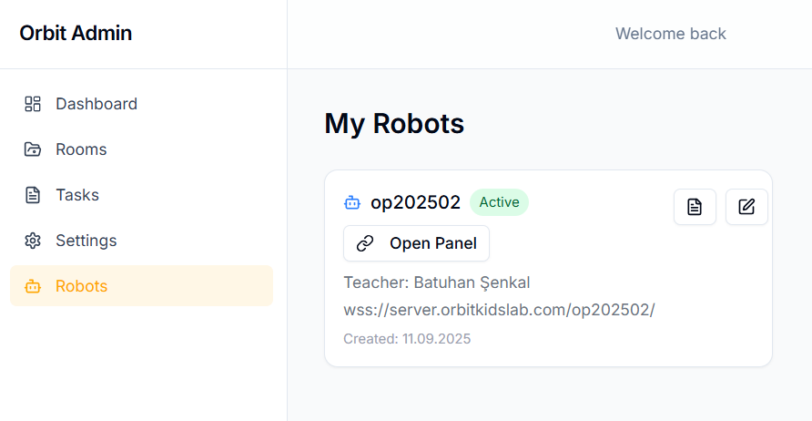
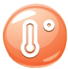

Öğretmen ve Öğrenci Paneli
Başlangıç
💻⚙️ Sistem Gereksinimleri
Herhangi bir pakete veya indirme aracına gereksinim yoktur. Bir adet tarayıcı ve internet bağlantısı yeterlidir.
👩🏻🏫 Öğretmen Kaydı
Öğretmen hesabı oluşturmak için yalnızca e-posta adresi ve şifre bilgisi gereklidir. Kayıt tamamlandıktan sonra öğretmen, öğrencilere özel odalar oluşturabilir ve içerik yönetimini gerçekleştirebilir.
🎓 Öğrenci Kaydı
Öğrenciler, öğretmen tarafından paylaşılan oda numarası (ROOM CODE) ile sisteme giriş yapabilir. Giriş sonrasında öğrenciden yalnızca bir kullanıcı adı (NICKNAME) belirlemesi istenir. Bu sayede öğrenciler, kendi profilleri üzerinden derslere katılım sağlayabilir. 👩💻
Öğretmen Paneli
Sınıflar
Platform üzerindeki odalar iki farklı seviyeye ayrılmıştır:
-
Temel Seviye — Başlangıç düzeyindeki öğrenciler için hazırlanmıştır.
-
Orta Seviye — Daha ileri seviye uygulamaları içerir.
Bu yapı sayesinde öğretmenler, öğrencilerin gelişim düzeyine uygun içeriklerle dersleri yönetebilir.
DİKKAT
Sınıf oluşturma süreci her iki kategori (Temel ve Orta) için de aynı adımları içerir. Bu kategoriler arasındaki fark, yalnızca tanımlanan görevlerin seviye bazlı ayrımıdır. Yani Temel seviye sınıflarda temel düzey görevler, orta seviye sınıflarda ise orta seviye görevler yer alır. Bu yapı, görevlerin sistem içerisinde öğrenme seviyelerine göre sınıflandırılmasını sağlar.
Temel Seviye Görev Oluşturma
Orta Seviye Görev Oluşturma
Temel Seviye Görevin Robot Üzerinde Çalıştırılması
Orta Seviye Görevin Robot Üzerinde Çalıştırılması
Orta Seviye Görevin Bloklarının Ayrıntılı Anlatımı
Videoda anlatılan bloklar:
-
If bloğuna else if ve else ekleme
-
Function bloğuna parametre ekleme
-
List ve text bloklarına
itemekleme
Robots

Bu sayfa, admin tarafından sisteme eklenen öğretmenin bağlı olduğu robotun görüntülendiği alandır.
Chatbot Ayarları
Wifi Ayarları
Help Menüsü
Öğrenci Paneli
Temel Görevin Kodlanması
İKONLAR
| İKON | İSİM | GÖREV |
|---|---|---|
| Yeşil Bayrak | Programı başlatmak için kullanılır. | |
| Kırmızı Bayrak | Programı durdurmak için kullanılır. | |
| İleri | Robotu bir adım ileri götürür. | |
| Sağa Dönüş | Robotu sağa döndürür. | |
| Sola Dönüş | Robotu sola döndürür. | |
| Döngü | İçine yazılan komutları tekrar tekrar çalıştırmayı sağlar. | |
|  | Sıcaklık Ölçümü | Ortam sıcaklığını ölçer. |
| Ses Kaydı | Öğrencinin mikrofon aracılığıyla ses kaydetmesini sağlar. |